Objectives
Here we discuss how to install and set up effective tools for Android application development. These include the Android Studio IDE + an emulator. We'll also create a simple Android App (HelloWorld), and be able to manage it within the Android Studio environment.
Android Studio & SDK Tools
Instructions for working in Walton Building PC Labs:
If you are working on the workstations in WIT in the IT Building, Android Studio should already be installed so proceed with the next step of the lab.
Instructions for working on your own laptop
Download and install Android Studio from
Select the correct version for your OS. The primary prerequisite for installing Android Studio is that you have a recent Java installation on your workstation. To see if you have Java, and to install it if you do not, visit:
Android Studio looks after downloading the Android SDK for you but you can download and install the Android SDK separately from
This download is actually the SDK Manager (not the full SDK), where you can choose which versions of the Android platform you want to install & develop with - select anything above API 24 (Version 7.0). (But I'd leave out all the TV and Wearable stuff :) ) We'll be using API 28 (Version 9.0) for CoffeeMate, so you should get comfortable working with different versions of APIs.
NOTE : these downloads are quite large so it's advisable to have these versions installed BEFORE class.
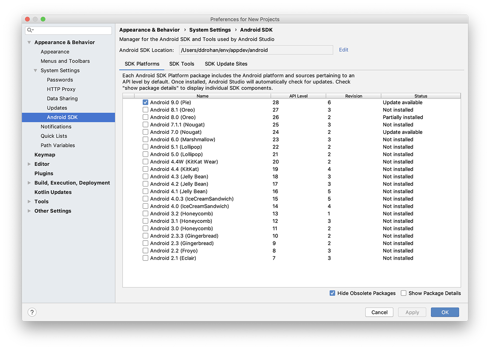
Your First Android Project - "HelloWorld"
In Android Studio, select File->New->New Project, or if it's a first run, select "Start a new Android Studio Project"
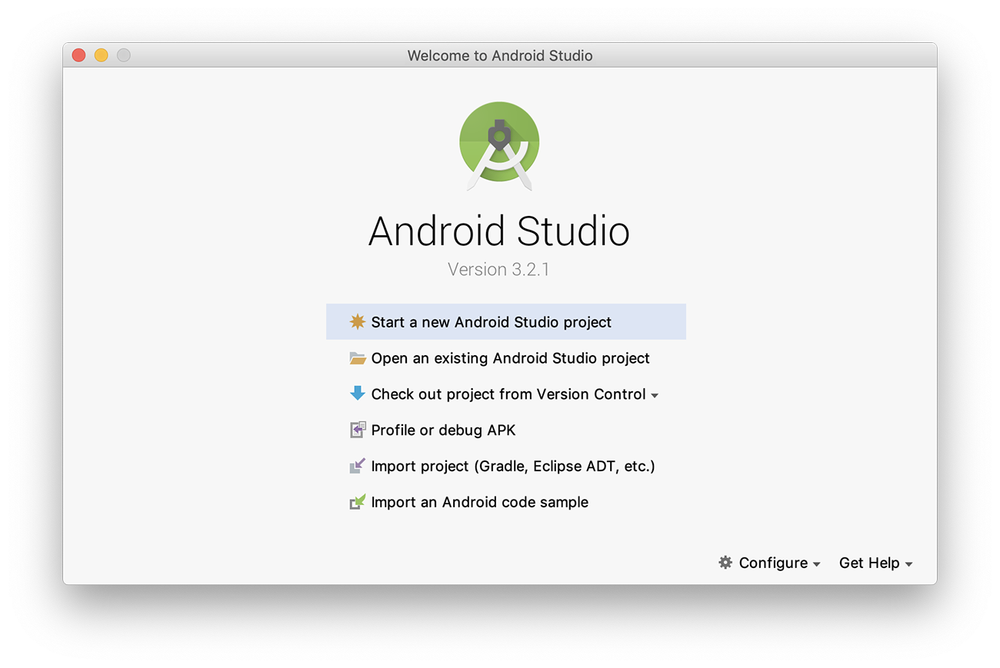 Press "Next" (or click the option) and then select your Activity type, for this simple app, an Empty Activity will suffice
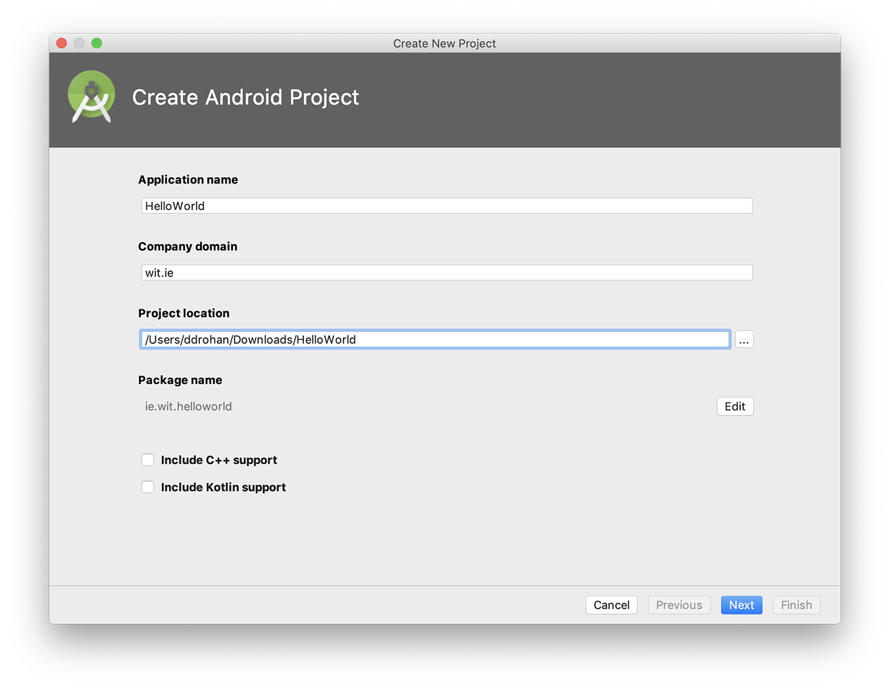 Select the Platform you want your app to run on - we'll just stick with Phone & Tablet here
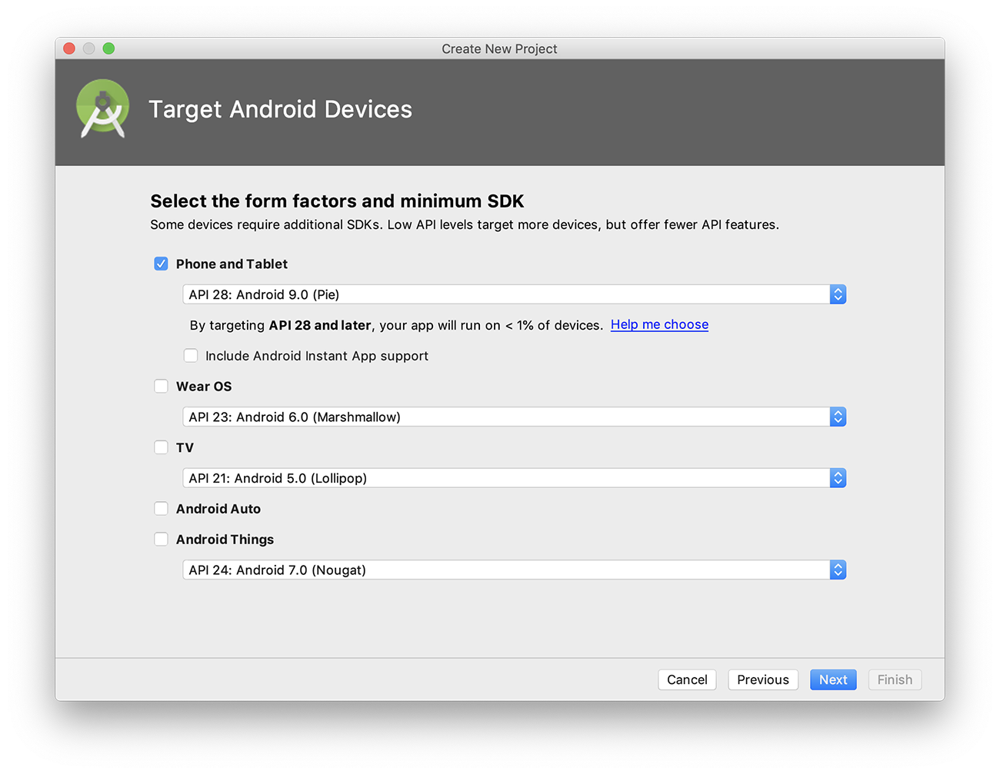 Change default project name to HelloWorld, accept the default package name (or provide a company domain) and project location and language. Select an appropriate Minimum SDK (API 28 in the screenshot)
After you press "Finish", you should now have something similar to the following: 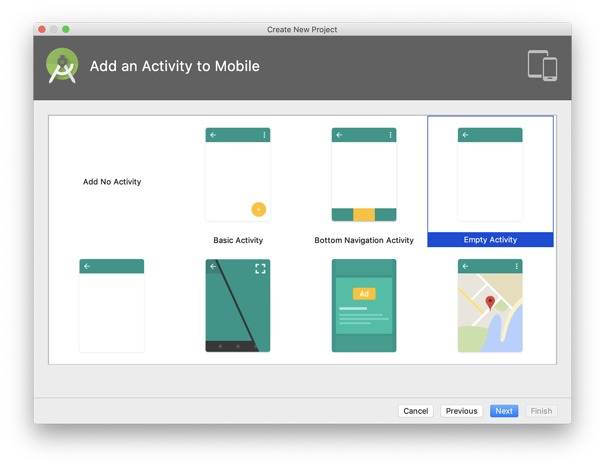 and 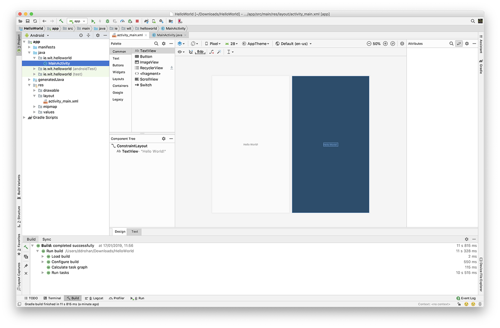 If you don't see both layouts you can switch to 'Design + Blueprint' View 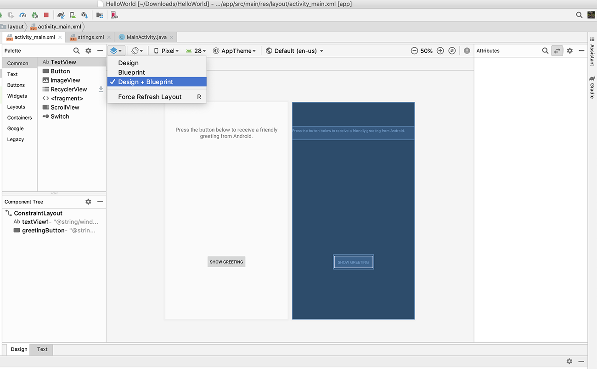
Next, as an exercise, select File->Close Project, to close the project so we can import it again.
If no other Projects are open you will be displayed with 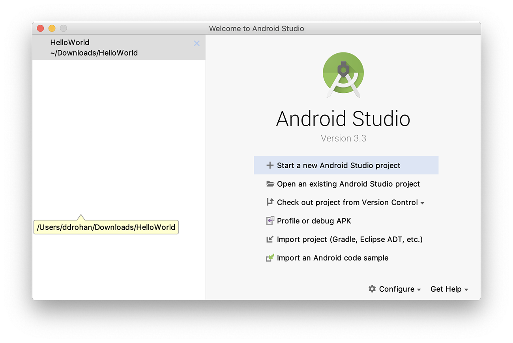
So, you can either
- Select the project from the Recent Projects List (on the left) or, if the project you want isn't in the List
- Import the project, so, select "Open an Existing Android Project" and navigate to the Project folder where you android app is stored (like 'HelloWorld' below)

Once the project is open again, familiarise yourself with the project layout - the initial xml layout or "screen" is first displayed, this is one of the many resources you will be using and creating throughout this module. We will experiment later with modifying this layout, but first you should run the application.
Select the Project (HelloWorld) and then select the 'Play' button as below
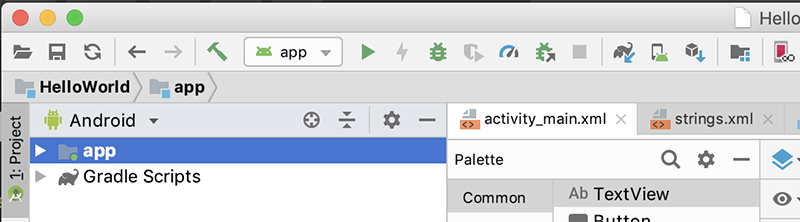
If you haven't done so already, you will be asked to select/create an AVD (Android Virtual Device), as follows:
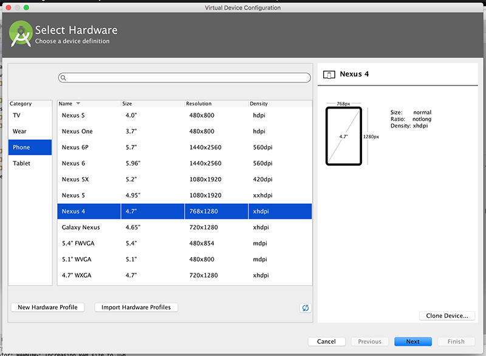
and
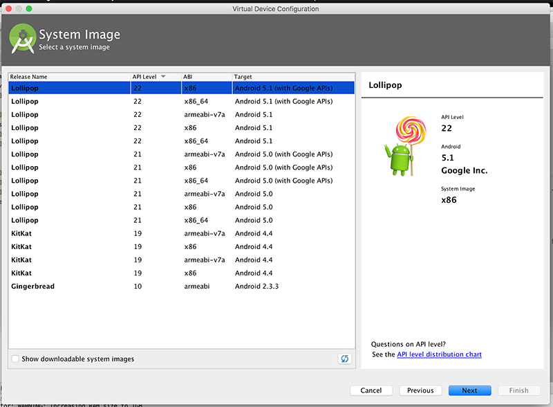
and
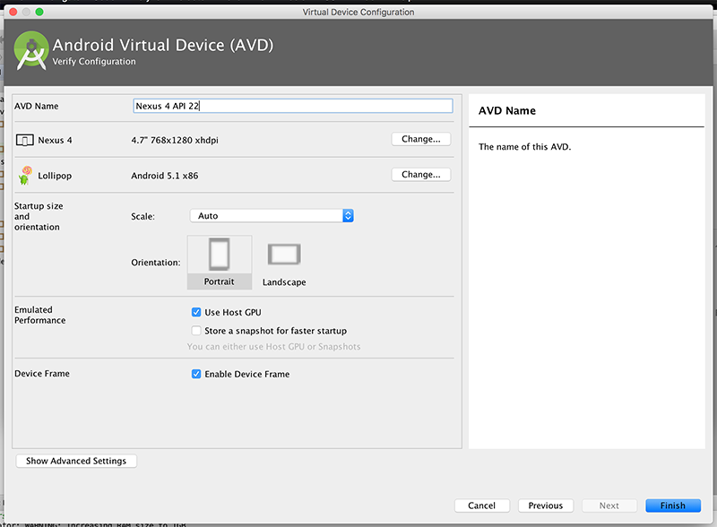
and
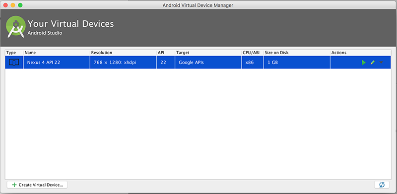
The Virtual Device is very heavy on resources so you may need to choose settings below what is selected in the Screenshots.
Otherwise, use the settings as above and your first Android App should launch, (Once you've unlocked the device!):
Our version of "HelloWorld"
In this Step, you will be required to develop and run your own version of the "Hello World" Android Project (as seen below).
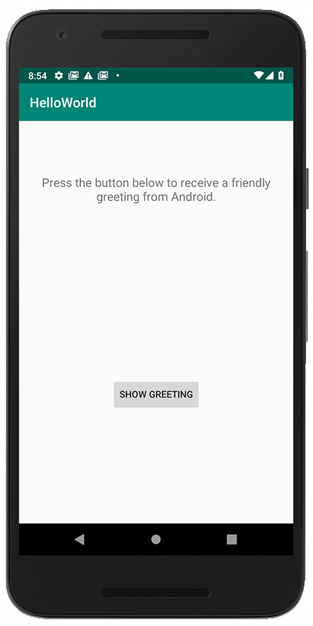
If you've deleted your HelloWorld Project, launch Android Studio (if it's not already open) and create a new Android Project called HelloWorld similar to what you did in Step 02.
If you haven't deleted the project, you can just continue on.
Name your package 'ie.wit.helloworld' (like you did before). Choose an Empty Activity and it's recommended you select at least Android 8.0 as the launch target platform (but any target will suffice for this particular lab). It's also probably a good idea to run the App at this stage, so you can set up your Virtual Device (if you haven't done so already).
Edit your "strings.xml" file (in your res folder) and add the following "resources" - be careful if you have created an app which contains a 'menu' folder, this also includes associated resources, so don't overwrite those resources, just add our ones at the end.
<string name="window_text">Press the button below to receive a friendly greeting from Android.</string>
<string name="button_label">Show Greeting</string>
<string name="greeting_text">Hello from Android!</string>Your completed strings.xml (with menu resources) should look like this
<string name="app_name">HelloWorld</string>
<string name="window_text">Press the button below to receive a friendly greeting from Android.</string>
<string name="button_label">Show Greeting</string>
<string name="greeting_text">Hello from Android!</string>If you choose "open editor" you can see the graphical representation of the String resources you have set up (and edit them there if you need to).
Now, edit your activity_main.xml in your layout folder and replace your TextView with the following - make sure your in 'Text' view and not 'Design' view window (so you can see the xml).
<TextView
android:id="@+id/textView1"
android:layout_width="wrap_content"
android:layout_height="wrap_content"
android:layout_marginTop="80dp"
android:gravity="center"
android:text="@string/window_text"
android:textAppearance="?android:attr/textAppearanceMedium"
app:layout_constraintStart_toStartOf="parent"
app:layout_constraintTop_toTopOf="parent" />
<Button
android:id="@+id/greetingButton"
android:layout_width="wrap_content"
android:layout_height="wrap_content"
android:layout_alignParentBottom="true"
android:layout_centerHorizontal="true"
android:layout_marginBottom="170dp"
android:onClick="showGreeting"
android:text="@string/button_label"
app:layout_constraintBottom_toBottomOf="parent"
app:layout_constraintEnd_toEndOf="parent"
app:layout_constraintStart_toStartOf="parent" />This will give you the following layout (once you select 'Design View' again):
Note how the widgets are 'anchored' to the layout border - this ensures that our button and textview display correctly on the layout at runtime.
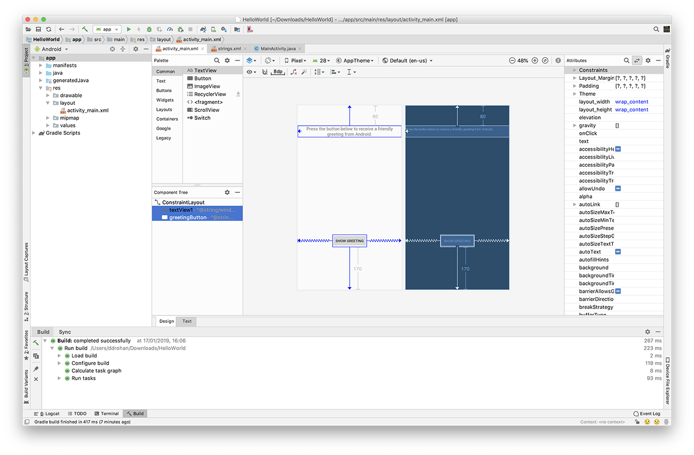
If you can only see a 'Design View' layout, choose 'Design + Blueprint' like before.
Once again, it's worth running the app at this point to confirm everything is displayed the way we want it. If you click the button, your app will probably crash - we don't have our showGreeting() method implemented yet.
So, the last thing we need to do is add in our event handling code so that a short message is displayed when the user presses the 'Show Greeting' button.
Firstly, open up the MainActivity.java source file and add the following method BEFORE the last closing brace
public void showGreeting(View v) {
String greetingText = getString(R.string.greeting_text);
Toast.makeText(this, greetingText, Toast.LENGTH_LONG).show();
}You'll get a few compiler errors due to missing imports, so try and fix those.
Note that we have no need for some kind of Listener interface (ala swing development) - our event handling is taken care of via the onClick attribute in our xml layout, here's what your completed MainActivity Activity class should look like.
package ie.wit.helloworld;
import android.support.v7.app.AppCompatActivity;
import android.os.Bundle;
import android.view.View;
import android.widget.Toast;
public class MainActivity extends AppCompatActivity {
@Override
protected void onCreate(Bundle savedInstanceState) {
super.onCreate(savedInstanceState);
setContentView(R.layout.activity_main);
}
public void showGreeting(View v) {
String greetingText = getString(R.string.greeting_text);
Toast.makeText(this, greetingText, Toast.LENGTH_LONG).show();
}
}So when you run your app again you should see the message "Hello From Android!" displayed.
We will investigate similar code more closely in the lectures.
Exercises
Working with Resources
- Just to get used to adding and editing resources, create a new button for our main layout, and try and 'hook it up' to a new string resource message to display to the user.
UI Design
- Have a look at adding in a new colour resource and changing the default colour scheme for the layout.